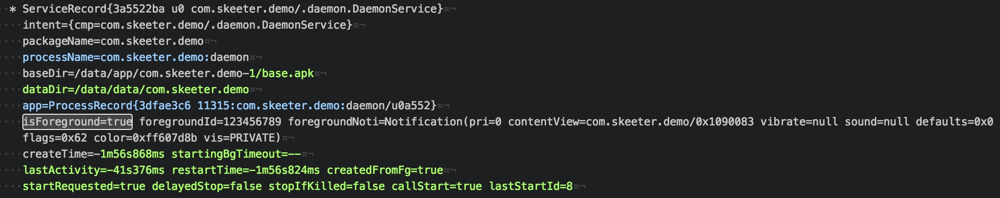

为了提高用户体验，现在大多数的应用都会增加推送功能，目前主流的第三方推送有 个推、mi push、百度、Jpush、极光等，但是推送的到达率却是不尽人意的，拿个推而言，服务器这边统计的结果是到达率仅有90%(仅做参考)。当然了还有官方的推送Google Cloud Messaging，可惜在国内然并卵，暂不做讨论。
推送到达率问题的解决是刻不容缓的，因为在目前互联网大用户量的场景下，10%的用户数还是相当大的。
原因
我们知道，推送的技术原理主要是保持网络的长连接，在TCP长连接建立成功的基础上，推送不能如期到达的原因主要和网络状况有关，比如网络慢、丢包等等，这个是所有网络访问遇到的问题，不是导致推送到达率如此低的主要原因。
那么，其最主要原因是什么呢？显然是TCP长连接持续保持这个前提未能得到保证，也就是：
推送时，移动端未在线
解决方案
现在我们找到了其原因所在，那么要解决这个问题，就要从两方面入手：
- “不择手段”的保证移动端在线，保证TCP长连接持续建立
- 缓存推送消息，用户上线后重新发送
保证移动端在线
其实也就是我们常说的进程保活，可以创建一个幽灵进程进行保活操作，也可以直接用应用主进程进行保活，用这个进程中建立TCP连接，保证其存活的最大时长。方案主要以下几种：
- 利用系统广播拉起应用，包括系统广播和同系列应用广播
- 启动前台service，由于我们不想让用户感知到，所以应利用系统漏洞取消通知栏Notification的显示
注意：
保证移动端在线确实能有效的提高推送的到达率，但是需要注意频繁的唤醒应用会导致应用耗电量的增加，所以要把握一定的度。
广播唤醒
利用系统广播
监听系统事件广播来唤醒应用，常用的广播有：
- 开机，
ACTION_BOOT_COMPLETED - 亮屏，
ACTION_SCREEN_ON - 灭屏，
ACTION_SCREEN_OFF - 插拔有线耳机，
ACTION_HEADSET_PLUG - 电量充足，
ACTION_BATTERY_OK
注意：
- 部分机型可能对开机广播做了限制，所以可能收不到开机广播
ACTION_SCREEN_ON、ACTION_SCREEN_OFF、ACTION_HEADSET_PLUG广播只能在代码里注册，当app完全退出后就收不到这个广播了
不同的app进程，用广播相互唤醒
- 嵌入第三方SDK会唤醒相应的app进程，比如
- 微信的SDK会唤醒微信应用，支付宝支付的SDK会唤醒支付宝SDK
- 个推SDK会唤醒其他嵌入个推SDK的应用
- App会唤醒同公司的其他app，比如：支付宝、天猫、淘宝、UC等阿里系的应用，打开其中一款就有可能顺便唤醒其他几款应用
前台service
该方案是应用范围最最广泛的一种手段，主要是启动一个前台service，并利用系统漏洞避免其在通知栏处显示Notification。这样既能保证进程的优先级高于普通后台进程，又将用户感知降到最低。
思路：
- API < 18时，启动前台Service时直接传入
new Notification() - API >= 18，同时启动两个id相同并传入
new Notification()的前台Service，然后再将后启动的Service做stop处理
1 | public class DaemonService extends Service { |
adb shell dumpsys activity services 查看结果看到前台service已经启动，但在通知栏里并未显示

当然了，我们可以结合上面这两个方案：
创建一个广播DaemonReceiver，该广播监听某些系统事件广播，在广播处理中启动DaemonService1
2
3
4
5
6
7
8
9
10
11
12
13
14
15public class DaemonReceiver extends BroadcastReceiver {
public void onReceive(Context context, Intent intent) {
startDaemonService(context);
}
private void startDaemonService(Context context) {
if (DaemonService.isAlive()) {
return;
}
Intent serviceIntent = new Intent(context, DaemonService.class);
context.startService(serviceIntent);
}
}
鉴于当app被杀死后是监听不到系统广播的，而我们还需要保持DaemonService以确保推送TCP连接的建立，那我们可以在DaemonService的onDestroy()中启动一个新的service DaemonReStartService, 在DaemonReStartService中来重新启动DaemonService。
Android中的应用就是这么一步步被玩的卡的不要不要的，所以请谨慎使用。
缓存推送消息
流程如下：
- 客户端
- 收到推送后，发送回执消息给服务器，并存储到本地数据库
- 收到的推送消息的消息ID已存储到数据库中时，不做处理并重发回执消息
- 服务器
- 如果客户端未在线，则将该条消息保存到数据库
- 在客户端上线后，取出推送消息发给客户端并标记为已删除
- 在取消息时注意同种类消息是否需要合并，考虑时效性只保留一定时间内的推送消息，合并或者超时后标记为已删除
- 推送时在数据库里保存记录，收到客户端回执后将该条消息标记为已删除，超时未收到回执消息则重发消息
总结
不以用户利益为出发点的手段都是耍流氓。
进程保活必定导致应用一直保持唤醒状态一直在后台运行，不可避免的导致耗电量增加；发送回执消息则会额外消耗用户流量(可以考虑一段时间内的回执消息合并后统一发送)，服务器保存每条推送记录可能会导致服务器压力过大。
所以，在尽可能保证用户到达率的情况下，也要考虑节能和流量，和使用设计模式一样，凡事皆有度，万事不可过。